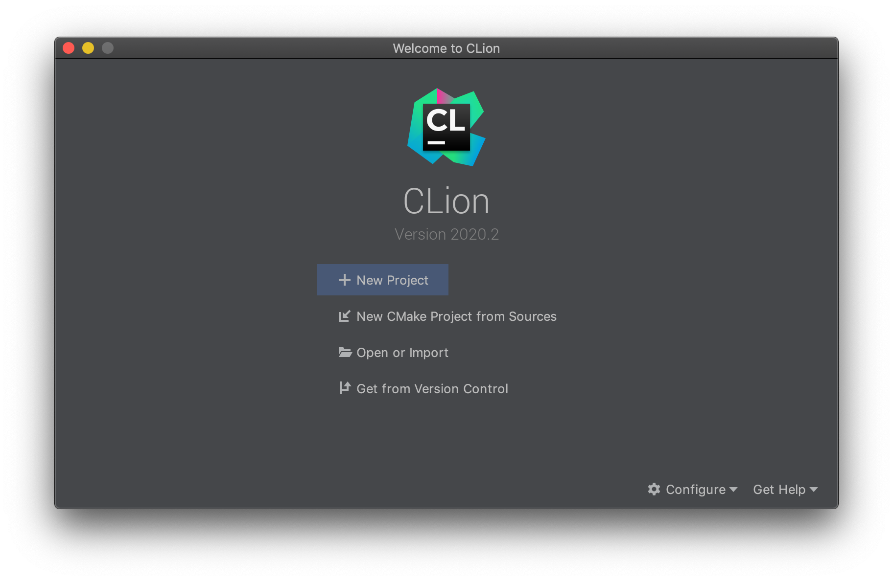
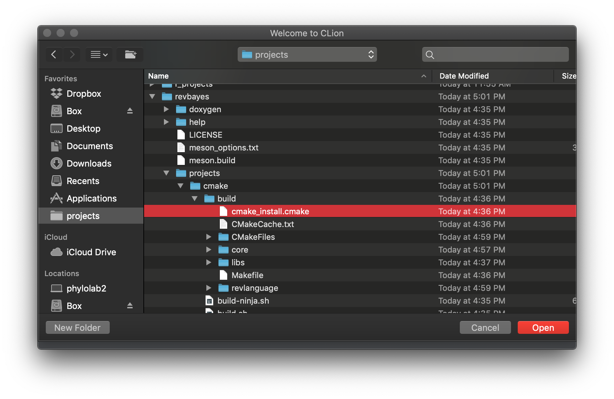
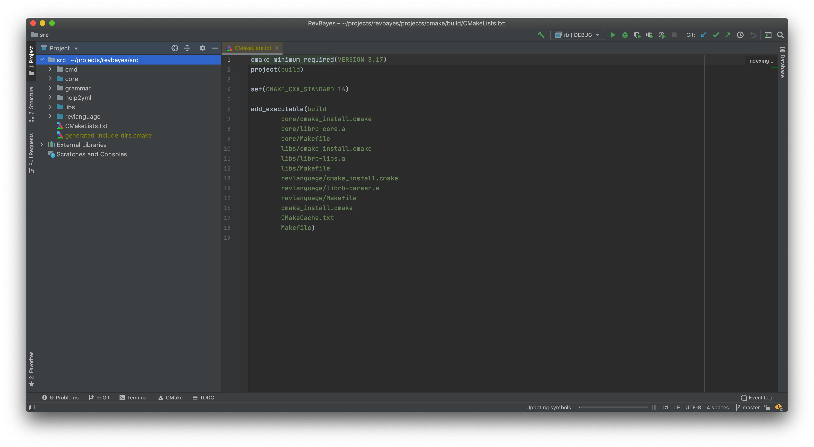

CLion is a cross-platform IDE for C and C++ by JetBrains.
To work in CLion you need to install CMake. On Mac OSX you can install via homebrew, apt on ubuntu, or chocolatey on windows,
Follow the install instructions for installing RevBayes from source. The only change is instead of running ./build.sh run ./build.sh -debug true. This should take a second so feel free to go to grab yourself a snack.
Open CLion. It should look like this:

Click on “New CMake Project from Sources. This will open up a file tree, you need to find a file called cmake_install.cmake. You can see this below, mine was at <where-revbayes-is>/revbayes/projects/cmake/build/.

This will open the project in CLion and it should say in the bottom updating symbols… This part takes a bit, an additional snack may be warranted. After a bit you should also see in the upper right near the little hammer a dropdown menu that says rb | DEBUG.

You should now be able to set a breakpoint and run your Rev script. The interactive Rev console does not work in CLion right now.